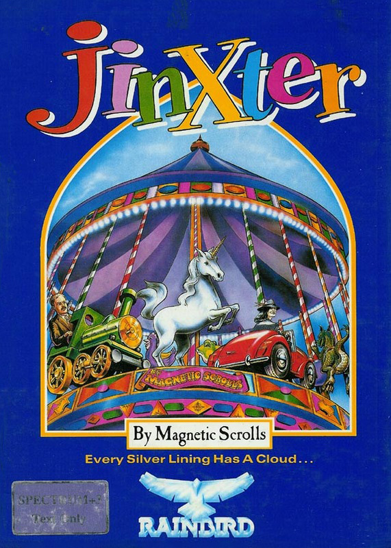
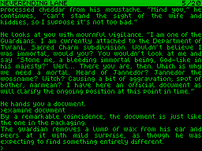

Jinxter


{kind=link}

| Publisher: | Rainbird |
| Price: | £15.95 Disk only |
| Year: | 1988 |
| Source: | CRASH, Issue 51 |

From Kerovnia and The Guild of Thieves to Aquitania and the magician of Turani — Magnetic Scrolls’ latest adventure deals with a land in which luck is running out. The good fortune of Aquitania depends on the safekeeping of the bracelet created by its wise magician. The bracelet and its five lucky charms have become separated through the machinations of the notorious Green Witches in a bid for control of the kingdom. Meanwhile, in households everywhere, the odds are stacked in favour of misfortune: the land is jinxed.
Finding the right bus home seems an unusual stroke of luck — until you get run over disembarking. You recover your senses and realise that only a guardian angel could have prevented you from dying. Seconds later the Guardian (certainly not an angel by the looks of his sleazy herringbone overcoat) appears before you. In between bites of a cheese sandwich he hands you a memo and tells you that you have been chosen to recover the charms and use the bracelet to defeat the witches. Mission accomplished, he promptly disappears.

Although you begin on home ground outside your own front gate, a little exploration soon takes you to more exotic locations. Snorkelling, mousecatching, negotiating artificial waterfalls and underground passages are skills which must be acquired in the course of the adventure. The descriptions are well crafted and absorbing to read. A great deal of work has gone into including even more details than in previous Magnetic Scrolls adventures; the EXAMINE command almost always yields an atmospheric and humorous reply.
Aquitania’s characters are depicted realistically. Burly bakers and prim postmistresses are oblivious to the seriousness of your quest — they’re far too busy with their own lives. To get them to break off and pay attention it is necessary to project your imagination towards their needs rather than your own. Interaction is often a matter of tactful co-operation.
Object orientated puzzles are of more than average difficulty but none of them are insolubly obscure. There are often several ways of completing a puzzle and all of them are logical, though some may require activation of more than the average number of brain cells. What seems obvious at first often turns out to be a red herring; the game has a nasty sense of humour.
Death is an impossibility (an innovative feature in an adventure game) as the Guardian always appears in time to save you. This makes the game accessible to beginners as well as seasoned adventurers and does nothing to reduce the element of risk: false moves early on can still cripple progress later in the game. Fortunately there is a SAVE (though no RAMSAVE) option.
Magnetic Scrolls’ parsing improves with every game, and Jinxter accepts most complex sentences and synonyms. Surprisingly, the GO TO command introduced in The Guild of Thieves is absent, possibly because the complexity of the landscape would have made it too difficult to implement.
One small drawback, noticeable because it’s practically the only one, is the longwindedness of some necessary game procedures. You may be standing by a door with the relevant key in your hand yet you still have to type in several commands if you want to go through it (UNLOCK DOOR WITH RUSTY KEY, OPEN DOOR, ENTER). The process is even more laborious where complex actions, for example striking a match, are concerned. No special skill is required to work out how to open a box of matches and take out a match, so why the need for a series of pedantic commands? A feature which allows the program to perform the action for you would have been a welcome addition to an otherwise excellent game.
The Pawn was open to charges of obscurity; The Guild of Thieves improved on that and Jinxter shows even further improvements. Its quality is apparent from packaging to plot and can only leave you wondering what weird and wonderful developments the future holds.
| Overall: | 92% |